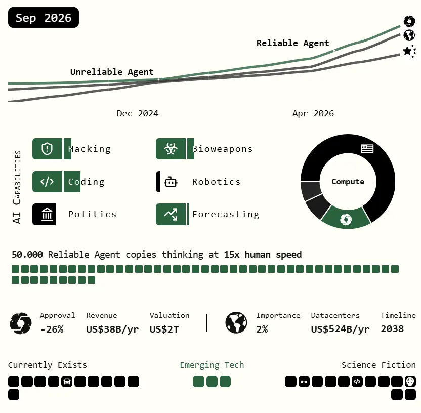

Mid 2026: China Wakes Up and the Global AGI Race.
In the scenario simulation of artificial general intelligence trajectories leading toward 2027 by ai-2027.com, mid-2026 marks a decisive geopolitical turning point. In China, the leadership of the CCP begins to directly feel the accelerating reality and geopolitical gravity of AGI.
"The race toward AGI is no longer treated as a speculative software trend, but as an existential mobilization of nuclear power, centralized compute clusters, and high-stakes cyber operations."
01. The Compute Deficit and Hardware Bottlenecks
Tightening semiconductor export controls alongside limited initial state backing left Chinese research laboratories under-resourced relative to their Western counterparts.
To maintain momentum, domestic labs relied on smuggling banned Taiwanese silicon, purchasing older-generation hardware, and fabricating domestic chips that lagged roughly three years behind the US-Taiwanese frontier. Through these stopgap measures, China maintained approximately 12% of the world's AI-relevant compute. However, older architecture proved significantly harder to manage, and silicon supply remained an ongoing structural friction.
A few standout domestic teams, particularly DeepCent, achieved remarkable breakthroughs with constrained compute. Yet the hardware deficit strictly bounded their scope without centralized backing, keeping their best models approximately six months behind OpenBrain's flagship systems.

02. Doctrine Shift and Radical Compute Centralization
For years, top leadership prioritized physical manufacturing while regarding consumer software platforms with caution. But as internal strategic assessments highlighted the unstoppable pace of Western AGI milestones, state posture shifted decisively toward an all-out AI initiative.
The government initiated a nationwide AI research consolidation, establishing instant data-sharing and algorithmic exchange protocols across domestic labs. Over the course of twelve months, leading researchers were unified into a collective led by DeepCent, directly pooling algorithmic insights, training datasets, and compute hardware.
To power this effort, a Centralized Development Zone (CDZ) was established at the Tianwan Nuclear Power Plant, the largest nuclear facility on earth. The CDZ hosts a massive new datacenter for DeepCent alongside high-security research campuses. At this stage, nearly 50% of China's AI-relevant compute was unified under DeepCent, with more than 80% of new chips routed straight to the CDZ to establish what would become the largest centralized compute cluster globally.
03. The Cyber Espionage Dilemma: Model Weights
Even with unprecedented compute concentration at Tianwan, China remained behind on algorithmic architecture due to weaker base models. Intelligence units doubled down on plans to exfiltrate OpenBrain's proprietary model weights.
Stealing weights is vastly more difficult than typical code exfiltration: the weights consist of multi-terabyte files stored on heavily secured infrastructure hardened to RAND SL3 specifications. Intelligence planners believed they could execute the breach with insider assistance, but likely only once before security defenses permanently adapted.
This created an acute strategic dilemma for leadership: should they execute the breach immediately to secure Agent-1, or hold out for a subsequent model while risking that OpenBrain's defensive countermeasures upgrade beyond penetration capability?
Adapted and synthesized from the geopolitical scenario analysis at ai-2027.com.